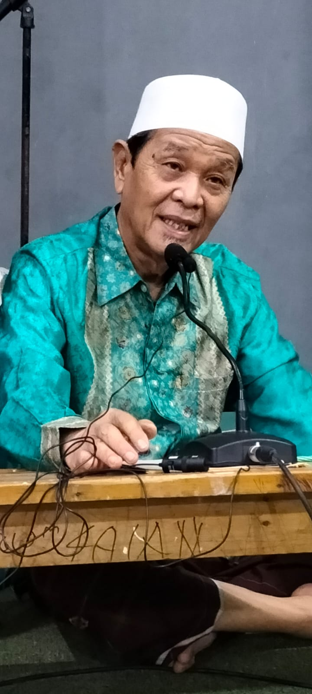
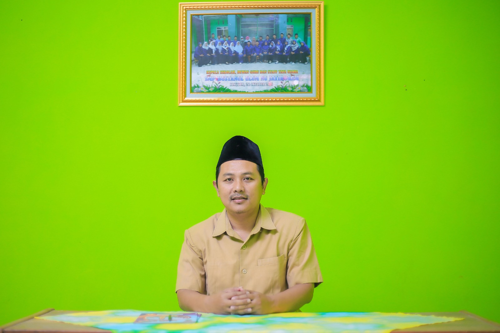

Tentang Sekolah
KH. Mas Mansyur Tarsyudi sebagai Pendiri pondok pesantren Al-Falah Salafiyah Jatirokeh
H.M Abud Abdad Jangki Dausat S.H., M.Pd. sebagai kepala sekolah SMP Bustanul Ulum NU Jatirokeh
Sekolah SMP Bustanul Ulum NU Jatirokeh adalah institusi pendidikan yang berada di bawah naungan Yayasan Pondok Pesantren dan Pendidikan Al Falah Salafiyah Jatirokeh. Lembaga pendidikan ini memiliki komitmen untuk tetap fokus pada pemberian bekal dasar ilmu Agama dan penguasaan Iptek.
Dalam rangka ikhtiar mencetak kader yang berkebangsaan, mampu menyeimbangkan Kurikulum Pendidikan antara Pelajaran umum dan Pelajaran Agama ala pesantren sehingga diharapkan menjadi generasi yang tawasuth menghadapi dinamika zaman.
Program Pendidikan Kelas Excellent
Program Sains
Program pembelajaran yang mencakup tentang matematika dan IPA
Program Al-Qur'an / Tahfidz
Program pembelajaran yang mencakup penghafalan pada Al-Qur'an
Program Kitab Kuning
Program pembelajaran yang mengkaji dan sorogan
Program Bahasa
Program pembelajaran yang mencakup tentang bahasa Inggris dan Bahasa Arab
Kontak
Alamat: Jl. Raya Karang Sembung, Songgom, Brebes
Email: smpbunu@gmail.com
Telepon: (0283) 451 3274
HP: 0815 5325 7404